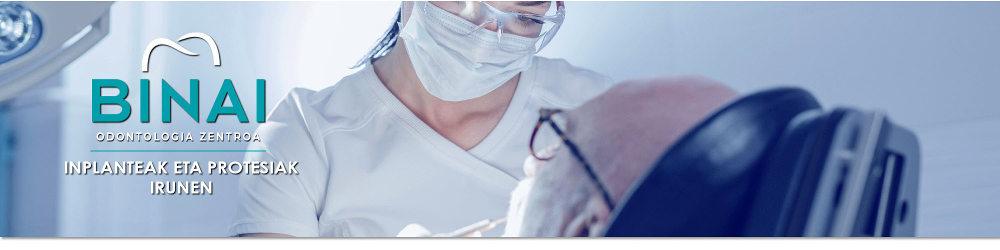
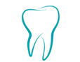
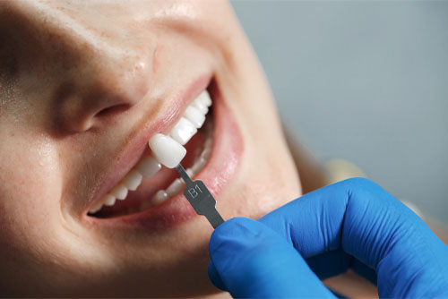
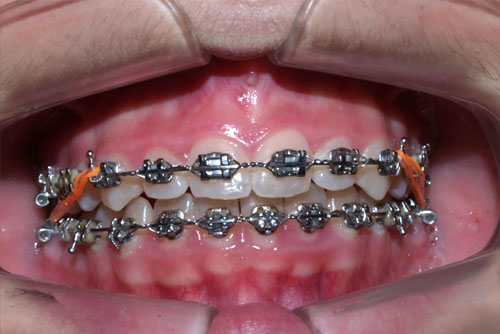
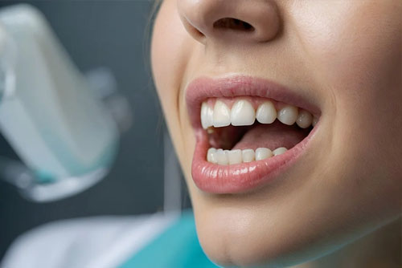
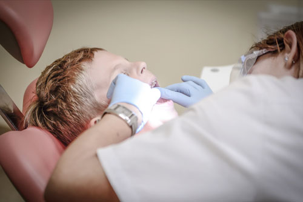
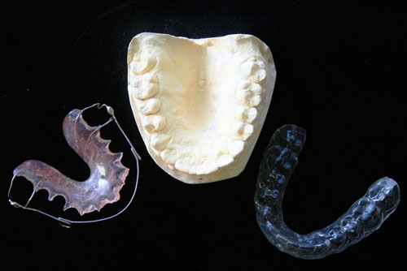
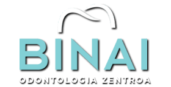

Binai Odontologia Zentroa Irunen
Binai hortz-klinikak azken aurrerapen teknologikoak ditu

Espezialitateak
Binai Hortz Klinikan, Irungo erreferentziazko hortz-kliniketako bat bezala sendotzen gara.
Odontologiarekiko dugun grina paziente bakoitzari eskaintzen diogun tratu pertsonalizatu eta hurbilean islatzen da, tratamendu bakoitza xehetasunez azalduz eta bere behar espezifikoetara egokituz.
Inplantologia
Gure Irungo hortz-klinikan, kalitate handiko hortz-inplanteak dituzten hortz gaixo edo galduen ordez, irribarre naturala eta funtzionala eskaintzen dizugu.

Ortodontzia
Hortz-oklusio akastuna zuzentzea bracket metalikoen, zeramikoen edo Invisalign bidez, irribarre lerrokatua eta estetikoa lortzeko.

Hortz-estetika
Hobetu zure irribarrearen itxura, hortzak zurituz, hortz-karillak eta irribarrearen diseinua bezalako tratamenduekin. Binai Hortz Klinikan zure ahoaren estetika eta osasuna eskutik helduta joan daitezen apustu egiten dugu.

Hortz-protesien laborategia
Hortz-protesi pertsonalizatuak egitea CAD CAM teknologiarekin, zehaztasun eta egokitzapen handienerako. Hortz-protesietarako ordenagailuz lagundutako diseinuko profesional onenak ditugu.

P.A.D.I. Osakidetza
PADI-Osakidetza estaldura duten pazienteentzako arreta, Eusko Jaurlaritzako Osasun Sailak sortutako programa, Euskadiko haurren aho-hortzen osasuna bermatzen duena.
Euskadin osasun-laguntza publikoa jasotzeko eskubidea duten 7 eta 15 urte bitarteko pertsonei zuzendutako programa.

Bracket edo Invisalign
Alde batetik, teknika finkoek, hala nola marruskadura txikiko bracket metalikoek edo zeramikoek, emaitza ezin hobeak ematen dituzte hortz-posizioa zuzentzean.
Bestalde, lerrokagailu gardenak edo Invisalign ditugu, finkoak ez direnak eta hortzak posizio egokirantz mugitzea ahalbidetzen dutenak.

Odontologia orokorreko zentroa Irunen
Binai Hortz Klinikan odontologo kualifikatuek eta esperientzia frogatua dutenek artatuko zaituzte.
Gure zentroan zure ahoko osasuna esku onetan dago, paziente bakoitzaren beharretara egokitzen gara.
Zatoz bisitan!
Hortz-estetikako tratamenduak Binai hortz-klinikan
Hortz-inplanteak Irunen - Binai hortz-klinika

Hortz-klinika Irunen
Odontologo profesionalak
HORTZ-TRATAMENDUAK
• Hortz-inplanteak
• Hortz-estetika
• Ortodontzia
(Bracket - Invisalign)
• Hortz-protesien laborategia
• P.A.D.I. Osakidetza
(Haurren Hortzak Zaintzeko Programa)
KONTAKTU
943 612 831 / 685 757 042
685 757 042
clinicabinai@gmail.com
Jose Eguino, 2 - 1. A
(Elitxuko anbulatorioaren ondoan)
20302 Irun (Gipuzkoa)
© CLINICA DENTAL BINAI S.L. - Eskubide guztiak erreserbatuta